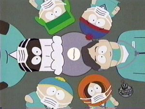
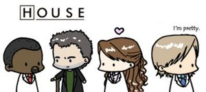

House M.D.
 De: La Frikipedia, la enciclopedia extremadamente seria.
De: La Frikipedia, la enciclopedia extremadamente seria.

|
CUIDADÍNEste artículo o sección contiene alerones feos. O sea
SPOILERS.
|
De la serie Programas de TV:
House examinando la máquina de café para inventar un pretexto de revisión anal
| Idioma original:
|
Guiri
|
| Creador:
|
James Wilson
|
| Duración:
|
1 hora
|
| No. Episodios:
|
110, cada uno tratando una enfermedad más rara que el anterior
|
| No. Temporadas:
|
7 llegando a 8 la proxima se llamara House: en busca del vicodin
|
| ¿Aún se transmite?:
|
En todo el mundo, y algunas regiones de la Atlántida
|
| Género:
|
Realismo-ficticio médico
|
| Nivel de frikismo:
|
Medio alto
|
| Películas:
|
nada de ná
|
Achtungh: Ver House puede provocar adicción a la vicodina
Este artículo trata sobre la serie. Para el artículo del prota de la misma, véase Gregory House.
House M.D. es el título de la serie de ficción que narra la vida del Doctor Gregorio Casa, "goyo" para los amigos. Este doctor es famoso por ser adicto a la vicodina (coloquialmente conocida como aspirina ++) y por que sus diagnósticos son algo extravagantes, a causa de la aspirina ++. Se suele apodar a si mismo cariñosamente "tullido" a causa de su cojera permanente y a su avanzada vejez, que según él lo hacen mas sexy e irresistible.
Trabaja en el Hospital Princeton-Plainsboro, privado, evidencia que se conoce por que todos sus pacientes salen desnudos vivos de sus quirófanos, por que el tiempo de espera para un trasplante de corazón es de una media de 10 minutos por capítulo, por que los doctores son atentos, por que está aseado, por que hay dinero, por que las doctoras son bonitas, por que no contratan al que sea por que no hay médicos, en fin, algo que no te regalan unos simples gobernantes. El Doctor Casa esta a las ordenes de Lisa Cuddy, directora del hospital, aunque en uno de los capítulos se deja entrever que antes de serlo su profesión era menos honrada.
Es encarcelado en un manicomio, por lo que en la nueva temporada titulada "Prison House: en busca del vicodin", se unira a Michael Scofield para escapar del manicomio y evitar que Wilson se tire a Cuddy.
Personajes
Lisa Cuddy (Gostosapomposuda para los brasileños): Lider, encargada de los doctores del hospital y los poderes magicos de House, es mundialmente conocida por se la que le come el mandado al doctor Casa (aunque solo sea en su imaginacion). Tambien es conocida por sus grandes talentos como tener pechos firmes y un trasero enorme. Se sabe desde la primera vez que se ven que estos dos van a terminar juntos!...Ella y "Casa" se acostaron una vez, este, siempre le hace perder la paciencia pero ella se niega a despedirlo...
El doctor Casa sólo tiene un amigo: James Wilson, que no es una marca de whisky americano, sino el jefe de oncología del hospital al que Casa siempre le roba la comida. Es el único que le aguanta y el único que le comprende. Durante un tiempo anduvo follandose a "zorra implacable".
A sus órdenes y como esclavos tiene a varios y "megamaravillosos" médicos:
- Robert Chase (cheese para los colegas): Rubio de bote y niño de papa. Su bata blanca es de armani y su boli de dolce&gavanna. Es australiano y es el internista de turno, es decir, el médico multi-usos, te hace desde un TAC hasta una prueba de tóxicos o incluso un tacto rectal.
- Eric Foreman (Forrest Gump para los colegas, por el incidente que tiene después del capítulo "Euforia II").El neurólogo Negro. Es el que más le planta cara al Doctor Casa, por eso en un capitulo Gregorio le amenaza diciéndole: "Te haré reaccionar a palos negro de *****"
- Allison Cameron (you can canon): La niña buena del mundo, la ética es su especialidad, además es inmunóloga, siempre opta por la opción moral y siempre se pelea con el Doctor Casa por que él huye de sus obligaciones morales. Se cuenta por ahí que tiene un lío con Chase a espaldas de "Casa".
El doctor casa saca de sus casillas a Foreman y por miedo a no querer ser como el (osea no queria dejar de ser negro para ser blanco ojo azul) abandona a House y este por rencor despide a chesse el cual como se foyaba a cameron se la lleva consigo. debido a esto tiene que contratar nuevos pendejos ayudantes haciendo un concurso mas entretenido y housioso(tipico de house) que los diagnosticos de dichos capitulos.
- Trece (entre mas le ..... mas me crece): Nombre: Remy Hadley, pero eso es irrelevante (lo que importa y calienta es que es bisexual) pasa a ser la nueva Cameron pero esta en lugar de tener sueños humedos con Casa los tiene con Foreman. Se sospechaba que era bisexual y lo confirman al llevar a su nuevo "ligue" con el doctor Casa despues de que retosaron y la otra se puso mal. Le gusta mucho el chocolate y por ello se tira a Foreman. Se desconoce si su condicion ha dado frutos y haya realizado un trio con otra mujer y
el hombre de chocolate Foreman.
- Lawrence Kutner (el indio Fernandez): Medico contratado por lástima despues que un negrillo mormon (el que consiguio las bragas de Lisa cuddy) que decia ser su amigo lo traicionara e hiciera que lo "corrieran del juego". Es de origen indu y vio como mataban a sus padres y por eso el tambien se mata. House gusta burlarse de él casi tanto como de trece. A pesar de ser una persona de aproximadamente 27 años gusta de tener una edad mental de un feto de 9 meses. Es conocido por su mira de lelo que muestra que esta pensando muy profundo
o tiene un pedo atorado. Orina sus pantalones con solo ver a Casa (se dice que se suicida porque House la hace mal de ojo). Mata a la serie cuando Obama lo mata a base de oportunidades de empleo en la quinta temporada, a partir de que se muere, la serie no levanta más y le empiezan a crear una tanda de tramas raras que sólo cavaron la tumba de la serie.
- Chris Taub (dostor narigas): Enano de circo contratado por House para reirse de el. Jamas toma refresco en lata porque perforaria el otro extremo con su inmenza nariz de judío. Le gusta meterla sin usar protección y por eso acaba divorciándose y criando niñatas gemelas de una enfermera a la que se tiró sin condón.
- Eric Foreman (chocolate blanco): Como lo corren por ser un miniCasa busca de nuevo asilo con Casa el cual no acepta pero es imnotizado por los senos de Cuddy y le regresa su puesto.
- Martha M. Masters: La gordita cerebrito que Cuddy contrata para fastidiar a House despues de que 13 se fuera a curarse la enfermedad de Huntington a Hollywood donde consiguió trabajo en peliculas de lesbianas bisexuales financiadas por Disney. Masters es muy nerd y muy ingenua y House se aprovecha de ella para
violarla hostigarla y echarla y volver a contratarla tropocientas veces hasta que ella se cansa y renuncia para seguir estudiando sin nunca haber perdido la virginidad.
- Chi Park: Aparece en la ultima temporada la contraton para que House no paresca racista.
- Jessica Adams: Aparece en la octava y última temporada (que terminó como el culo U_U) y viene a ser la Cameron 3, reemplazando a 13 que a su vez reemplazaba a Cameron. Adams era la doctora de la prision cuando House estaba preso (otra vez ¬¬) y la conoce ahí porque obviamente prefiere hacerse el enfermo para ligar a la enfermera güenota en vez de quedarse en la celda a ser violado por todos los reos del pabellón. Cuando Jáus sale bajo fianza por un par de pulmones, Adams se pelea con sus jefes y se va a trabajar con House.
Enemigos:
- Edward Budler (Fucked Fat Man): El maldito magnate asquerosamente rico y seboso; gracias a Goyo el retiro 100 millones de leros. Después de Foreman es quien le planta más la cara. Es un maldito lambiscón
hijoputa que buscó ganarse a los lacayos de Casa a toda costa, incluyendo en su repertorio el fisgoneamiento de las cuentas bancarias del mismo Goyo para ver que le saca... a el y a Wilson.
- Michael Twitter (Green Mile Motherfucker): Policia que hostiga a House por dejar en su ano un termometro de a metro, le da caza por medio de la red twitter titulada "¿que esta haciendo Casa en este momento?" Despues de que Cuddy lo defendiera, por la atraccion sexual que siente hacia él, ya no se sabe mas de él.
- El Hostigador Privado: un sabiondo que House contrata para perseguir en secreto a todos sus esclavos, pero desaparece a mediados de temporada luego de que House ganara una apuesta que consistía en quien era el primero en pre-follarse a Cuddy...
- Amber Vuelakistes (Perra maldita de cariño): Contendiente a puesto de Cameron nalgoncita y chichudita (la Trece es mas sensual por su bisexualidad, por eso le gana la contienda), una vez que demuestra tener mas
huevos valor que House, este la rechaza por ser una perra de Satanas. Pero Wilson le da asilo en su cama. Muere en un accidente por ir a recoger a Casa solo por hacerle la barba y ver si le daba trabajo. A pesar de regresar como alucinaciones de House, no lo hace en traje de colegiala como Cuddy en otras alucinaciones.
Los casos
 House y su equipo examinando la maquina del café en
South Park Los diagnósticos del Doctor Casa son de una pauta rigurosa, no hay capítulo que se salve de la punción lumbar, o de la prueba de partenidad, única manera que tiene "casa" de sacarse un dinerillo extra, ya que sus allegados son unos ludópatas y siempre se apuestan cantidades sustanciosas de dinero en si los padres del paciente son sus padres biológicos.
Todos los casos del Doctor Casa son rarísimos e inexplicables, salvo por el Doctor Casa por supuesto, las enfermedades van desde un sarampión rebelde a una tenia en el cerebro, pasando por el antrax y la lepra a la vez y de mogollones de síndromes. Científicos españoles dicen haber encontrado varios casos de síndrome de House. Por el cual la persona afectada, llega un día al trabajo con bastón, un tarro de pastis y con actitud irónica y arrogante.
Cómo hacer un capitulo de Dr. House
- Tendrá que salir en el intro alguien que empiece con alucinaciones severas y alguien que también podría estar enfermo se pondrá la manos en la cabeza diciendo "Ayúdenme"
- Saldrá el video de intro, la musiquita, los esquemas y el río con los arboles.
- Saldra el Dr. House haciendo alguna gracia, jugando yoyó o discutiendo de algo que no tiene que ver con medicina posiblemente: (Mujeres, Deportes o lo social). NOTA: forzosamente es con Wilson o con Cuddy, tal vez con Foreman.
House con la mirada dice que no es lupus
- Se le pedirá al Dr. House que atienda un caso de alucinaciones severas en un paciente, él se negará rotundamente sin darle importancia hasta que por increible que parezca acepte el caso.
- Al atender al paciente se dará un encuentro ya sea con una frase sarcástica o un chiste pesado por ejemplo:
- Dr. 1 El paciente presenta severas alucinaciones, espasmos y pérdida del sentido espontánea.
- Dr. House Qué tenemos aquí!
- Paciente ¿Usted me va atender?
- Dr. House Vaya, aparte de alucinar puede ver el futuro! Es un genio
- Paciente ¿Es que no sabe cómo me siento?
- Dr. House Por la forma en que toca sus manos y constantemente mueve la garganta noto que tiene una simple complicación por usar analgésicos... Que le den Vicodin en 300 miligramos!!
- Dr. Robert Chase House!!!!! el paciente no respira! y expele sangre por las fosas nasales y boca!!!!!!
- Dr. House Entonces es el síndrome Johanes más una reacción del Vicodin posiblemente por consumo de drogas!
- Dr. House Doctora Allison!! irrumpa en su casa y busque esporas de hongo o drogas escondidas!
- Dr. Allison ¿Pero por qué drogas? sus niveles de miadoquina responden a una simple alergia.
- Dr. House Exacto pero contamos con el Vicodin que le administramos!
Esquema de un capítulo de House
 ¿No es lo más lindo que has visto en
tu perra vida?
(Unos desconocidos están haciendo alguna chorrada)
- D1:Pues la Mari me regaló una pulsera de plata que... aghhh...
- D2:Churri, ¿Estás bien?
- D1:¡Cof cof whaghh!
- D2:¡¡¡Churri!!!
- D1:¡Cuack!
- D2:¡Dios mío! ¡Que alguien me ayude!
- TUUUUUUN TIIIINNNNNN....
- Ti Tiiiruuuriiiiiiiru... Ti Tiiiruuuriiiiiiiru....
- ¡¡¡DOCTOOOR... HOUSE!!!
- (a continuación se oye la musiquilla de Superman)
(House y el Neurólogo Negro ("NN") caminan por un pasillo del hospital. House se trinca un puñao de pastis):
- Neurólogo Negro: La paciente sufrió una reacción alérgica a las aminotopotasas calciformes de sus calcetines.
- House: ¿El TAC mostró niveles altos de churriminoácidos?.
- NN: No, y los torrínidos están en 14.
- House: Que le hagan una cojonoscopia, a ver si muestra signos de ostetitación.
- NN: ¿Insinúas que tiene chungopatitis? Sólo hay un caso entre un millón, no tiene sentido... cortisona y "pacasa".
- House: ¿Ah no? entonces... ¿Por qué se rasca la oreja izquierda?.
- NN: ?¿?¿?¿?¿?¿?¿¿??.
- House: Que le hagan los análisis.
(House se trinca un puñao de pastis, se las ingenia para no pasar consulta, y de paso nos enseña algo más de la vida... y después...)
- Churri: No me encuentro b... cof cof aghhhhh!
- NN: Sufre una parada cardiorrespiratoria!! ¡¡20 gramos de Vicodin!!
- Marido de la churri: ¡¡Mi mujer se muere!! ¡¡¡Hagan algo!!!
(La entuban, la electrocutan, y le salvan la vida. House se trinca un puñao de pastis. Él y su equipo discuten en una sala con una pizarra de rotuladores. De cada frase entiendes una o dos palabras: conjunciones y pronombres.)
- Tía Buena Empollona (TBE) : Ha reaccionado a los esteroides, no puede ser una alergia común.
- House: ¡Muy bien! ¿Te has dado cuenta tú solita?
- TBE: /mode_miradasesina ON
- House: Bien, yo tengo razón, tiene chungopatitis. Hay que ponerle lejía en vena.
- TODOS: ¡Pero qué dices! ¡Si no tiene chungoloquesea podrías matarla! blahblahblah.
- House: Aquímandoyouuuuuuu.
(Le aplican el tratamiento y la paciente se pone a morir otra vez, la entuban, la electrocutan, y la salvan...)
- House: Vale, no era chungopatitis...
(House se trinca un puñao de pastis. Luego, decide que hay que allanar la casa del paciente y, de paso, cambiarle la medicación por otra de alguna enfermedad que como máximo aparezca una vez entre 1 millón)
Alguno o algunos miembros del equipo de House (tenemos una Tía Buena Empollona, un Neurólogo Negro y un Australiano Pijo –AP–) allanan la casa, plagian la escena de recogida de pruebas de CSI y, cuando no encuentran nada (porque no tienen cojo-zoom™), hacen alguna chorrada como comerse algo de la nevera o cepillar al perro del paciente...)
(De vuelta en el hospital. House se trinca un puñao de pastis.)
- House: ¡¡¡Hacedle una punción lumbar con una cuchara!!!
- TBE: Pero, es demasiado peligroso, podríamos desencadenar una…
- House: ¡¡¡Hacedle una punción lumbar con una cuchara!!!
- AP:La punción lumbar no está indicada en...
- House: ¡¡¡Hacedle una punción lumbar con una cuchara!!!
- NN: ¡¡¡Pero si no tiene médula!!!
- House: ¡¡¡¡HE DICHO QUE LE HAGÁIS UNA PUNCIÓN LUMBAR!!!!
(En algún momento también hay escenita de laboratorio con interesantísimas pipetas y frascos, ¡Bieeeeen! )
- Churri: Memueromáaaaas...
- House:¡Dadme un tubo y una bolsa de aire! A un lado que voy...zzZZZzztTTTTttztttztz... (y... le salvan la vida)
- Jefa Buenorra del Hospital: ¡La paciente se ha puesto verde!, ¡Os la vais a cargar!, ¡¡House es un incompetente!! (aunque siento una terrible admiración y aprecio de verdadera amiga hacia él, así que no haré nada) .
(House se trinca un puñao de pastis. Luego pasa consulta y se ríe de sus pacientes... Luego, reflexiona en la terraza y el Oncólogo Ligón (OL) le da una lección moral de valores. House le recuerda que le pone los cuernos a su mujer, y el OL le dice "Sí, pero tú estás solo y amargado, chincha, chincha.", y House le dice una bordería pero en el fondo piensa sobre ello y pone cara de pena. Posteriormente veremos a House trincando pastis mientras golpea una pelota contra la pared con una mano y juega con un yoyó en la otra. De fondo, una telenovela con médicos como protagonistas).
(Vuelven a la sala de la pizarra. House se trinca un puñao de pastis.)
- NN: La última chorrada que le pusimos casi la mata.
- House: Porque no tiene eso que nos inventamos... ¿Qué puede ser...?
- TBE: Oye, siempre que nos quedamos sin ideas suelo decir que...
- TODOS: ¡¡¡QUE NO!!! ¡¡¡QUE NO ES LUPUS, COHONE!!!
(House se trinca un puñado de pastis, pone su ojo a 15 mm de la cámara, le pega a algo con el bastón y se vuelve de espaldas a la pizarra.)
- House: A ver, que no se me ocurre nada, DIAGNÓSTICO DIFERENCIAL
- TODOS: ¡¡HURRA!! ¡¡Creíamos que no lo ibas a decir nunca!! ¡¡VIVA!!
(House se queda mirando una polilla que revolotea en una lámpara con forma de yin-yan... y, en ese momento, un búho sale de una ratonera y se come la polilla, lo cual parece dejar a House absorto en una tremenda revelación, que le incita a trincarse un puñao de pastis).
- House: ¿Cómo pude pasarlo por alto? ¡Se rasca la oreja izquierda! ¡Todo cuadra! ¡¡Tiene el Mal Infernal de Howkinson™!!
- TODOS: ¡¡¡HALAAAAA!!! ¡¡¡SOBRAOOOO!!! Es 1/2 caso en un trillón de muchillones!!! (pero conocemos la afección porque el saber no ocupa lugar, sobre todo si tienes guión).
- House: Cuando estuviste en casa de la paciente, ¿no dijiste que te lavaste los dientes con su cepillo de madera?
- AP: Si, ¿y?
- House: Y, ¿Te parece eso normal??
- TBE: Los cepillos de madera acumulan ácaros que pueden actuar de desencadenantes del Mal Infernal de Howkinson™ y blah blah...
- House: ¡Muy bien, Tía Buena Empollona! Por eso te contraté... ¡y porque estás buena, claro!
- NN: ¿¡¿¡¿PERO ESTÁIS TODOS LOCOS?!?!? ¡Cómo va a tener eso! ¡Si ni siquiera existe! ¡Y además no puede ser que haya información de una cosa que sólo he ha pasado a un tío en toda la historia de la medicina!. ¿Es que soy el único que no ha perdido la cabeza??
- AP: Bueno... yo de pequeño estudiaba seminario pero Dios me abandonó y desde entonces...
- NN:¿?¿??¿?¿?¿??
- House: Tengo razón y todos vosotros sois una bosta.
(Resulta que, como siempre, al cuarto intento House tenía razón, aunque era totalmente imposible, y el paciente se salva.)
- NN: No me puedo creer que tuviera razón otra vez.
- TBE: Es mi héroe
- AP: ¿Os dais cuenta de que todos los médicos excepto House somos unos incompetentes, y que si no fuera por él se nos habrían muerto todos los pacientes de la serie?
- NN: Sí tío, y no veas como me joroba...
- TBE: En realidad es un hombre maravilloso que tiene taaaanto que enseñarnos...
- LOS DOS: (Zorra...)
De noche, en su casa, House se toma un puñao de pastis, suelta el bastón, intenta andar y se esnafra contra el pico de la mesa. Luego se pone a tocar el piano. La cámara se aleja...
- Ti Tiiiruuuriiiiiiiru... (fundido en negro)
(Suena la musiquilla de Superman)
Juego Interactivo de House M.D.
Cuando no tengas nada que hacer, siempre puedes sacar una gran cantidad de alcohol , tus capitulos bajados de internet de House, y disfrutar de este lindo juego.
- Cuando empieze la secuencia de inicio, toma una jarra de cerveza, si la acabas antes de que termine la secuencia, tomate otra.
- Cuando sugieren Lupus, Vasculitis o Sarcoidosis como la enfermedad del paciente, toma un vasito de whiskey.
- Cuando se descarte Lupus, Vasculitis o Sarcoidosis en la siguiente escena, toma una margarita. (ojo, la bebida)
- Cuando se realiza una punción lumbar, toma un shot de vodka, que se asemeja al fluido espinal. (toma uno extra si se refieren a la punción lumbar como "LP", o si dudan de la seguridad de realizar uno)
- Cada vez que alguien tenga un ataque, toma una copa de tequila, continua hasta que el paciente deje de tener ataques, o hasta que tu empiezes a tener uno.
- Cuando allanen la casa del paciente, toma un destornillador (la bebida), ya que siempre es utilizado para entrar en casa.
- Si le preguntan a House si es un doctor de verdad, toma whiskey.
- Cuando se burlen de las ideas de Chase, ahoga sus penas en pisco.
- Cuando House haga una broma acerca de los pechos de Cuddy toma una "Bailey's Irish Creme", o "Pezón de Ángel".
- Cuando Cameron sugiera que es autoinmune, toma un vasito de whiskey.
- Cuando House engañe a un paciente, intercambia bebidas con alguien.
- Cuando House llama idiota a un doctor despues de escuchar su teoría, toma un vaso de tequila con hielo.
- Cuando escriban o borren algo de la pizarra de diagnóstico, 1/2 vaso de whiskey.
- Cuando Foreman sugiere que es neurológico, prepara te un Vermouth.
- Cuando alguien vomite sangre, toma un Bloody Mary.
- Cuando Chase diga que está relacionado al corazón, toma un vaso de lo que sea que hayas tomado la última vez.
- Cuando House tenga una revelación, celebra con una jarrita de whiskey.
- Si aún te puedes mover, toma otra cerveza mientras pasan los créditos.
- Si House sigue mirando al vacio al final del capítulo, tomate un chupito de hierbas.
- Si el chupito no es suficiente, es que House no miraba al vacio, te miraba a ti.
Sólo para expertos:
- Toma un Vicodin cada vez que House tome uno.
- En vez de alcohol , cuando hagan una punción lumbar, date una "punción" de heroína.
- Si House hace un chiste sexista o racista, ponte un supositorio.
La mayoría de jugadores llegan a los comerciales sin desmayarse, nadie ha llegado a los créditos finales sin tener convulsiones, falla del hígado, o cualquier otra condición médica que requiera una punción lumbar o una visita con house.
Ver también
Enlaces externos
Autor(es):
- Krusher
- Nexo
- JacintoCanek
- Frikiman
- Khazike Khashondo
- El Sevillano
- El Samo
- Wixi
- Many20
- Cybercrank
Frikipedia 2005-2016, Licencia
GFDL 1.2 - Extraído por FrikiLeaks